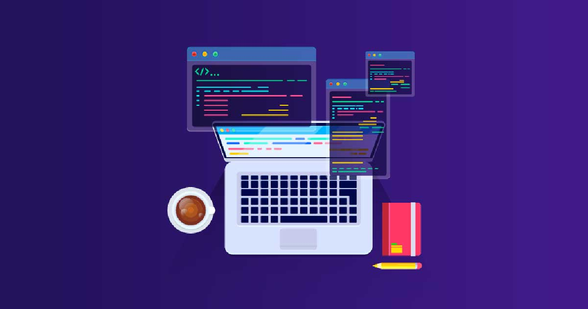

.png)
O que é Desenvolvimento Back-End?
O Back-End envolve a criação da lógica, banco de dados e a infraestrutura que suporta o funcionamento de sites e aplicativos. É a parte do desenvolvimento que lida com o processamento de dados, autenticação de usuários e comunicação com servidores.
Conteúdo do Curso
O curso de desenvolvimento Back-End abrange os seguintes tópicos:
- Fundamentos de servidores e redes
- Linguagens de programação: Python, Node.js, Java
- Bancos de dados relacionais e não-relacionais (SQL, NoSQL)
- APIs REST e GraphQL
- Autenticação e autorização de usuários
- Segurança e boas práticas no Back-End
- Deploy e escalabilidade
Objetivo do Curso
O objetivo do curso é capacitar o aluno a desenvolver a lógica e os sistemas necessários para garantir que aplicações web e móveis funcionem corretamente, conectando front-end, bancos de dados e servidores de forma eficiente e segura.
Público-Alvo
O curso é destinado a pessoas que desejam aprender a desenvolver servidores, gerenciar banco de dados e garantir a segurança e escalabilidade de sistemas web. Ideal tanto para iniciantes quanto para desenvolvedores que desejam expandir seus conhecimentos em Back-End.